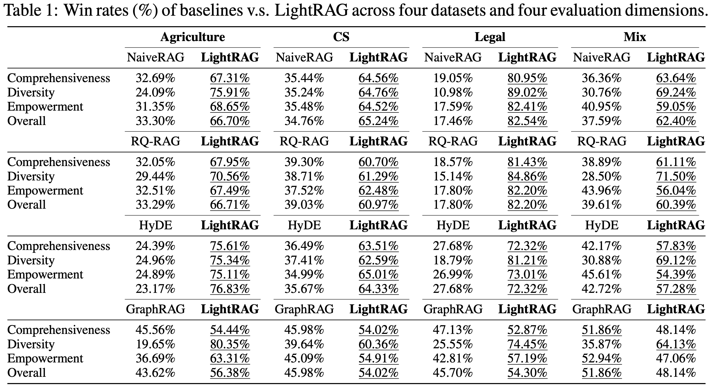
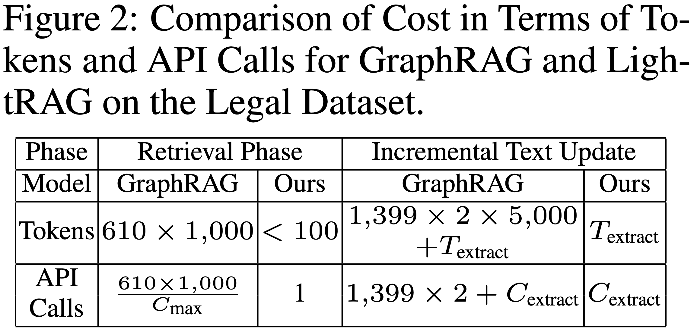

Retrieval-Augmented Generation (RAG) systems enhance large language models (LLMs) by integrating external knowledge sources, enabling more accurate and contextually relevant responses tailored to user needs. However, existing RAG systems have significant limitations, including reliance on flat data representations and inadequate contextual awareness, which can lead to fragmented answers that fail to capture complex inter-dependencies. To address these challenges, we propose LightRAG, which incorporates graph structures into text indexing and retrieval processes. This innovative framework employs a dual-level retrieval system that enhances comprehensive information retrieval from both low-level and high-level knowledge discovery. Additionally, the integration of graph structures with vector representations facilitates efficient retrieval of related entities and their relationships, significantly improving response times while maintaining contextual relevance. This capability is further enhanced by an incremental update algorithm that ensures the timely integration of new data, allowing the system to remain effective and responsive in rapidly changing data environments. Extensive experimental validation demonstrates considerable improvements in retrieval accuracy and efficiency compared to existing approaches.
Defining ground truth for many RAG queries, particularly those involving complex high-level semantics, poses significant challenges. To address this, we build on existing work and adopt an LLM-based multi-dimensional comparison method. We employ a robust LLM, specifically GPT-4o-mini, to rank each baseline against LightRAG. In total, we utilize four evaluation dimensions, including: i) Comprehensiveness: How thoroughly does the answer address all aspects and details of the question? ii) Diversity: How varied and rich is the answer in offering different perspectives and insights related to the question? iii) Empowerment: How effectively does the answer enable the reader to understand the topic and make informed judgments? iv) Overall: This dimension assesses the cumulative performance across the three preceding criteria to identify the best overall answer.
After identifying the winning answer for the three dimensions, the LLM combines the results to determine the overall better answer. To ensure a fair evaluation and mitigate the potential bias that could arise from the order in which the answers are presented in the prompt, we alternate the placement of each answer. We calculate win rates accordingly, ultimately leading to the final results.
We compare LightRAG against each baseline across various evaluation dimensions and datasets. The results are presented in Table 1.
We begin by analyzing the effects of low-level and high-level retrieval paradigms. We compare two ablated models—each omitting one module—against LightRAG across four datasets. Here are our key observations for the different variants:
We compare the cost of our LightRAG with that of the top-performing baseline, GraphRAG, from two key perspectives. First, we examine the number of tokens and API calls during the indexing and retrieval processes. Second, we analyze these metrics in relation to handling data changes in dynamic environments. The results of this evaluation on the legal dataset are presented in Table. In this context, \(T_{\text{extract}}\) represents the token overhead for entity and relationship extraction, \(C_{\text{max}}\) denotes the maximum number of tokens allowed per API call, and \(C_{\text{extract}}\) indicates the number of API calls required for extraction.
@article{guo2024lightrag,
title={LightRAG: Simple and Fast Retrieval-Augmented Generation},
author={Zirui Guo and Lianghao Xia and Yanhua Yu and Tu Ao and Chao Huang},
year={2024},
eprint={2410.05779},
archivePrefix={arXiv},
primaryClass={cs.IR}
}